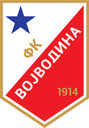

Sledeca utakmica j protiv Partizana. Utakmica ce se odrzati prvog Aprila u 20h.
Fudbalski klub Vojvodina osnovan je šestog marta 1914. godine u Novom Sadu, od strane učenika Velike srpske pravoslavne gimnazije, koja danas nosi ime gimnazija “Jovan Jovanović Zmaj”. Među njima su bili budući univerzitetski profesor Vladimir Milićević, budući hemičar Milenko Hinić, budući pravnici Radenko Rakić, Kamenko Ćirić i Kosta Hadži, budući tekstilni industrijalac Milenko Šijakov, zatim njegov brat Đorđe i otac Sava, kao i Gojko Tošić, Đorđe Živanov, Branko Gospođinački i Živojin Bajazet.
Prva utakmica odigrana je u maju 1914. godine u Kovilju, selu udaljenom 24 kilometra od Novog Sada i to protiv lokalnog FK Šajkaš. Vođa tog prvog tima Vojvodine bio je Jovan Ljubojević. Kako je njegova devojka živela upravo u Kovilju, želeći da je impresionira time što će joj predstaviti svoj fudbalski tim, on je odlučio da povede svoje drugove u Kovilj i već u svom prvom istorijskom meču, Vojvodina je ostvarila ubedljivu pobedu rezultatom 0:5. Tog dana, za nju su igrali: Svetozar Jocković, Milorad Milićev, Dušan Kovačev, Jovan Jocković, Ozren Stojanović, Uroš Čakovac, Živojin Ćeremov, Predrag Stojanović, Predrag Gavanski, Jovan Ljubojević i Sava Šijakov. Ekipa je nastupila u belim šortsevima i svetlo-plavim dresovima, koje je sašila majka igrača Milorada Milićeva. Pojedini igrači zaigrali su u kvalitetnoj obući mađarske marke “Kertes”, dok su neki nastupili u starim i već odavno iscepanim cipelama, koje su, usled žuljeva koje su dobili, tokom utakmice skinuli i ostatak meča odigrali bosi. Vojvodina je tog dana u Kovilju ostavila odličan utisak, a kao što su i došli, njeni igrači peške su se i vratili kući.
Sledeca utakmica j protiv Partizana. Utakmica ce se odrzati prvog Aprila u 20h.